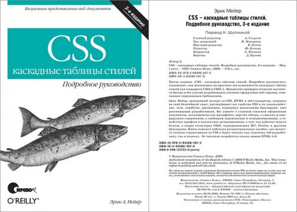

Меню
Описание товара
CSS. Каскадные таблицы стилей. Подробное руководство
Характеристики товара
Третье издание «CSS. Каскадные таблицы стилей. Подробное руководство» – Книга поможет избежать распространенных ошибок, она является полным справочником по CSS и будет полезна как опытному веб-разработчику, так и новичку.
- Авторы: Билл Кеннеди, Чак Муссиано
- Оригинальное назвоние:
- Оформление: мягкая обложка
- Количество страниц: 576 стр.
- Год выпуска: 2008 год
- Перевод: Н. Шатохина
Подробное описание товара
CSS. Каскадные таблицы стилей. Подробное руководство" показывает, как реализовать на практике все возможности каскадных таблиц стилей для стандартов CSS2 и CSS2.1. Множество примеров позволят научиться быстро и без усилий разрабатывать стилевое оформление веб-страниц, отвечающее современным требованиям.
Эрик Мейер рассматривает все свойства CSS и их взаимодействие, теги, атрибуты, реализации, поддержку различными браузерами, дает рекомендации разработчикам. Вы узнаете о сложном стилевом оформлении документов, пользовательском интерфейсе, верстке таблиц, о списках и генерируемом содержимом, о свободном перемещении и позиционировании, о семействах шрифтов и механизмах резервирования, о том, как работает модель блоков, о новых селекторах CSS3, поддерживаемых IE7, Firefox и другими браузерами.